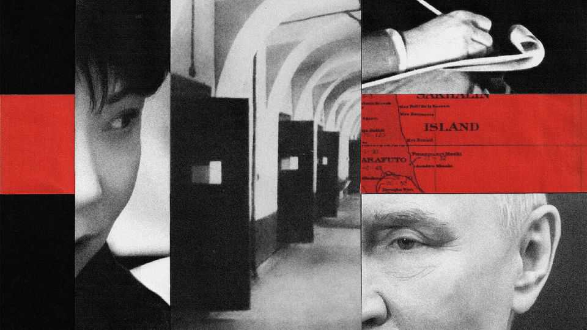

Russia has seized a Japanese journalist
Vladimir Putin may be preparing for a prisoner exchange. Pressuring Japan also pleases China

Oct 29th 2026
Imai yuki spent years learning to read Russian literature in the original. On a student-exchange programme in St Petersburg in 2014-15, the lanky young Japanese man impressed Russian friends with his knowledge of their city and its literary luminaries, such as Fyodor Dostoyevsky. Mr Imai parlayed his language skills into a job covering Russia for the Hokkaido Shimbun, a regional newspaper from Japan’s northernmost big island. On October 13th operatives from the Federal Security Service (FSB) burst into his hotel room on Sakhalin, off Russia’s far-eastern coast, and handcuffed him. “You are suspected of espionage,” a masked Russian officer says in a video released by the FSB. “V smysle?” a befuddled Mr Imai answers in Russian. “What do you mean?”
Mr Imai is being held at Lefortovo (pictured), a notorious prison in Moscow. The meaning of his arrest is far bigger than a local news story. His case ensures a freeze in relations between Japan and Russia will only get icier. Mr Imai may also end up embroiled in global hostage diplomacy, much like Evan Gershkovich, an American journalist who was arrested on baseless espionage charges in 2023 and was freed 16 months later in the largest prisoner swap between Russia and the West since the cold war.
Arresting a journalist for being a spy “probably means Russia is trying to get somebody home”, reckons Mr Gershkovich, the author of “This Cursed Beautiful Land”, a book about his experience and Russia’s hostage diplomacy. In Russian, such detainees are referred to as aktivy (assets) in the country’s obmenny fond (exchange fund). Officials speak openly about its status: “It may be time to fill up our exchange fund with European and American idiots in order to get our guys out,” Dmitry Medvedev, a former president turned attack dog, wrote days before Mr Imai’s arrest. While Mr Imai may be familiar with such terminology, the Japanese government has little first-hand experience with the practices. Another Japanese journalist was detained on spying charges in Russia in 2019, but deported within three days.
What exchange might Russia want? The Kremlin may hope that Japan—or its ally, America—can help bring a multinational deal to fruition. The exchange that freed Mr Gershkovich centred around Vadim Krasikov, a Russian operative convicted of murder and jailed in Germany; it also included two men associated with hacking and cyber-crime groups who were held in American jails.
One particular figure of interest now may be a Russian hacker from Qilin, a cyber-crime group linked to big ransomware attacks, who was nabbed on holiday in Japan and extradited to Germany less than two weeks before Mr Imai’s arrest. “Instead of sushi, he’s now getting cheese sandwiches in a German prison,” a German official crowed. Russia could also have targets in mind elsewhere in Asia. Over the past two years Australia has arrested and charged at least three individuals with working for Russian intelligence.
Russia may see Japanese citizens as fungible aktivy. There are recent precedents. American negotiators freed two Japanese nationals from jail in Belarus as part of prisoner exchanges last year. Talk of swaps has increased as Vladimir Putin and Donald Trump explore a possible meeting at next month’s Asia-Pacific summit in China: at Mr Trump’s request, Mr Putin last week released an elderly American held in Russian prison for four years.
At any rate, Mr Imai’s arrest comes at a low point in the complex and consequential relationship between Japan and Russia. In the waning days of the second world war, Russia took back control of Sakhalin (where Mr Imai’s grandfather grew up), as well as the nearby Kuril Islands. The two have yet to sign an official peace treaty ending that war; Japan still claims sovereignty over the four southernmost Kurils, which it calls the Northern Territories. Talks to resolve that territorial dispute have been frozen, along with the overall relationship, since Russia’s full-scale invasion of Ukraine in 2022, which Japan vehemently opposed.
The freeze got even colder in the months leading up to Mr Imai’s arrest. In August Mr Putin observed naval exercises on Sakhalin, his first visit in more than a decade. He also made his first-ever trip to the Northern Territories. In September Russia installed a monument in its far east depicting a soldier destroying a chrysanthemum emblem, the symbol of Japan’s imperial family. Japan condemned the visit and the monument; in early October Japan imposed fresh sanctions on ships linked to Russia’s shadow fleet of oil tankers.
Several factors may explain Russia’s recent frostiness. Japan’s continuing efforts to strengthen its armed forces, while focused on countering China, also have implications for Russia, which uses the Sea of Okhotsk as a bastion for nuclear submarines. And Takaichi Sanae, the prime minister, is seeking to build up Japan’s intelligence services. For Russian spooks, Japan has long been an important posting, says Andrei Soldatov, an expert on Russian intelligence: “You can’t really approach Americans in America, but you can try to recruit Americans there.”
The most telling factor may be China’s bitter feud with Japan over Ms Takaichi’s support for Taiwan. Russian pressure on Japan “allows Russia to show the Chinese that we’re on the same side”, says Alexander Gabuev of the Carnegie Russia Eurasia Centre, an American think-tank. Russia has echoed China’s rhetoric about Japan’s “new militarism”; the two now speak of the second world war as a shared battle against Japan. As Mr Imai’s newspaper noted in an article about Russia’s new monument, “This appears to be an attempt to convey a willingness to co-operate with China—which is at odds with Japan over the Taiwan issue—on matters such as historical interpretation.”
Mr Imai’s imprisonment has only chilled relations further. For now, his pre-trial detention is scheduled to last until December 12th. (Ms Takaichi has denied that he is a spy.) On October 23rd Japanese diplomats managed to pass him a parcel with supplies in Lefortovo; three days later they were finally granted consular access. One thing Mr Imai will not lack there is reading material: thanks in part to a long history of well-read prisoners (including Mr Gershkovich), Lefortovo is equipped with a library of around 9,000 books. Mr Imai, sadly, may have plenty of time to brush up on his Russian classics. ■
For exclusive coverage of Asian politics, economics and security, sign up to Asia Bulletin, our weekly subscriber-only newsletter.